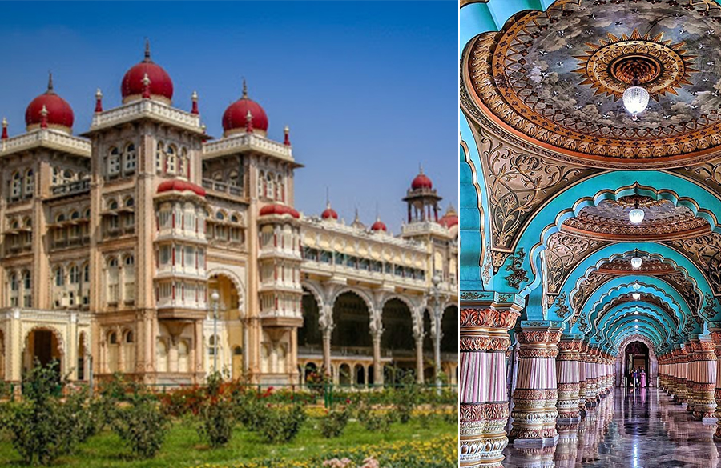
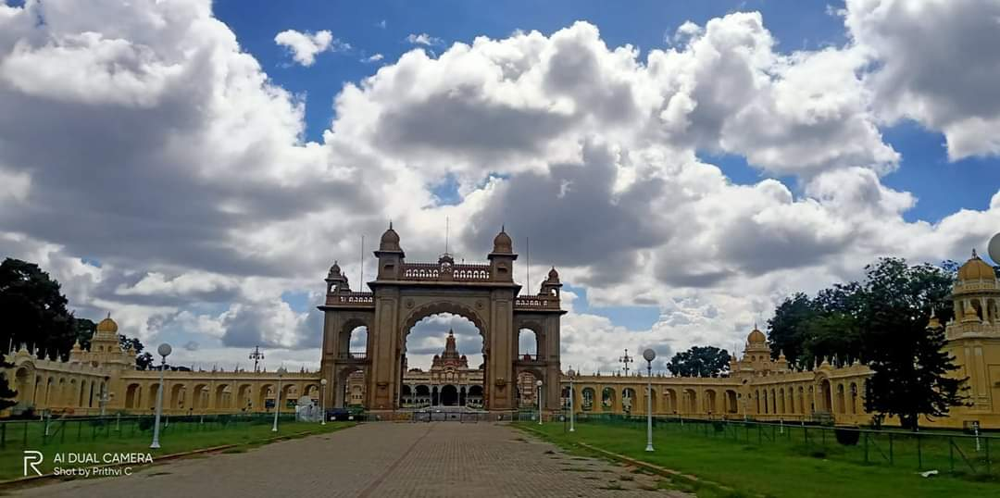
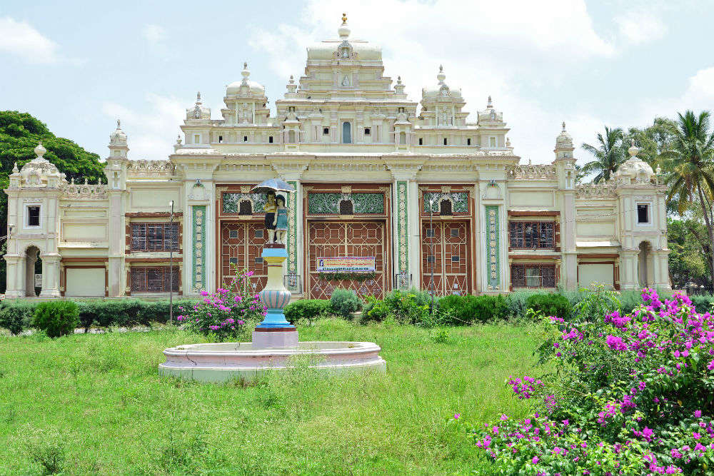
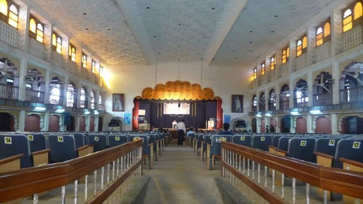
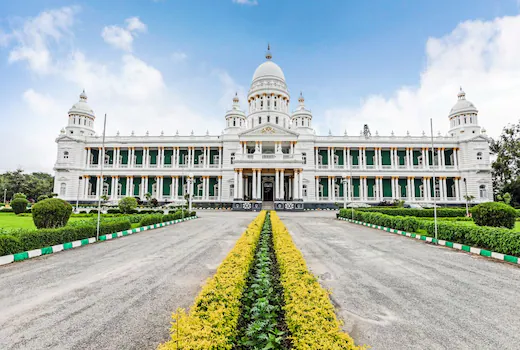
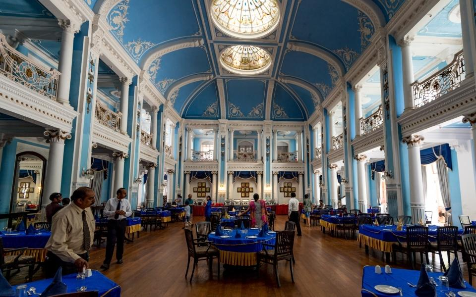

List Of Palaces
Mysore Palace


The Mysore Palace is a historical palace and the royal residence (house) at Mysore in the Indian state of Karnataka. It is the official residence of the Wadiyar dynasty and the seat of the Kingdom of Mysore. The palace is in the centre of Mysore, and faces the Chamundi Hills eastward. Mysore is commonly described as the 'City of Palaces', and there are seven palaces including this one; however, 'Mysore Palace' refers specifically to this one within the Old fort. The land on which the palace now stands was originally known as mysuru (literally, citadel), and is now known as the new Fort. Yaduraya built the first palace inside the Old Fort in the 14th century, which was burnt ablaze and constructed multiple times. The old fort was constructed using wood and thus was the reason for the old fort to catch on fire, the current fort was made up of stone,bricks and wood.The current structure was constructed between 1897 and 1912, after the Old Palace was burnt ablaze. Mysore Palace is now one of the most famous tourist attractions in India, after the Taj Mahal, with more than 6 million annual visitors.
Location
Jaganmohan Palace


Jaganmohan Palace is a palace in the city of Mysore, India. Its construction was completed in 1861 and was initially used by the Wodeyars, kings of Mysore as their home (when the present Mysore Palace (Amba Vilas Palace) was under construction after the previous palace burned down). It is now used as an art gallery and a function hall. The palace is one of the seven palaces of the royal city of Mysore. The Jaganmohan Palace was constructed in 1861 by the king Krishnaraja Wodeyar III as an alternate retreat for the royal family. The Mysore Palace, which was the original home of the royal family was burnt down in a fire and the construction of a new palace in its place was started in 1897.
Location
Lalitha Mahal Palace


This is the Lalitha Mahal, built by the erstwhile Maharaja of Mysore to host his most important guest, the Viceroy of India. The Lalitha Mahal is now one of India's most opulent hotels, a palace hotel that offers an experience of princely living in a real Maharaja's palace.On a low hill, just outside the royal city of Mysore, stand a shimmering white palace - a splendid Italianate palazzo, double-columned and domed - set in sparawling terraced and landscaped gardens. This is the Lalitha Mahal Palace, built by the erstwhile Maharaja of Mysore to host his most important guest, the Viceroy of India.
Location